Published picture book · Illustration internship
Nurse Florence
Illustrating a picture book that helps young readers understand food allergies — and how friends and the school nurse can help.
- Role
- Illustrator — all drawings
- Timeline
- Summer 2025
- Client / team
- Michael Dow, RN · Dow Creative Enterprises®
- Tools
- Procreate, Adobe Photoshop, Illustrator
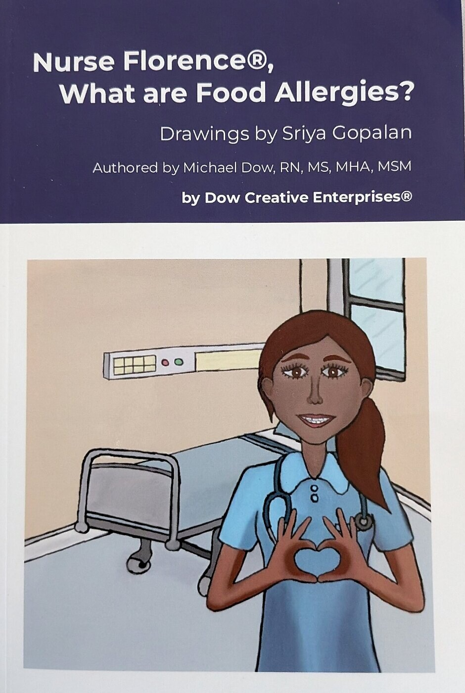
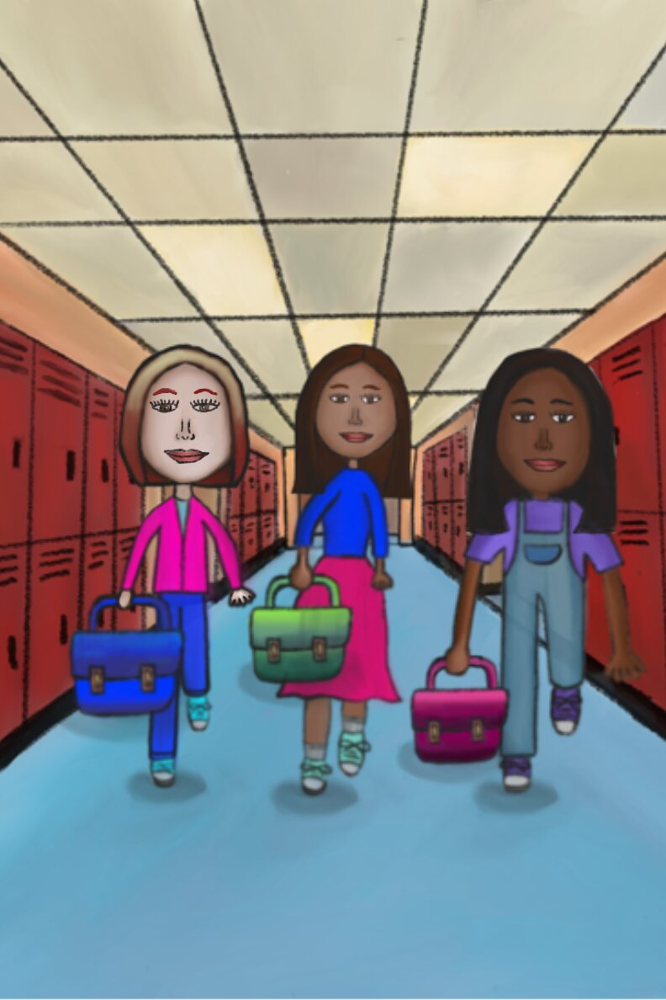
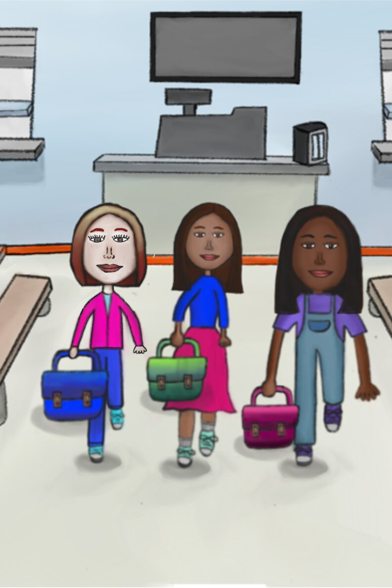
The brief
Nurse and author Michael Dow asked me to illustrate Nurse Florence®, What are Food Allergies?, a picture book for children aged 3 to 6 in his Nurse Florence® series of children’s health books. The story follows three classmates — Jean, Condi and Sonia — through a school day, as Nurse Florence helps them understand what a food allergy is and how to stay safe at lunch.
Constraints: no AI-generated imagery — every illustration is drawn by hand — a diverse cast, and characters who stay consistent from page to page.
My approach
Michael Dow’s text keeps a medical topic engaging for young readers, helping them become aware of diseases, allergies and prevention. My job was to make every page feel just as approachable.
I used a soft, watercolor-like palette and friendly faces, kept Jean, Condi, Sonia and Nurse Florence recognizable in every scene, and drew the science as wordless pictures on Nurse Florence’s phone, so children can follow along before they can read.
Process
01 · Time moves with the conversation
One detail I cared about is the cafeteria clock. As Nurse Florence talks with the girls over the lunch hour, its hands move forward from scene to scene — from the moment they sit down until lunch is over. Children may not notice it consciously, but it makes the story feel real and continuous.
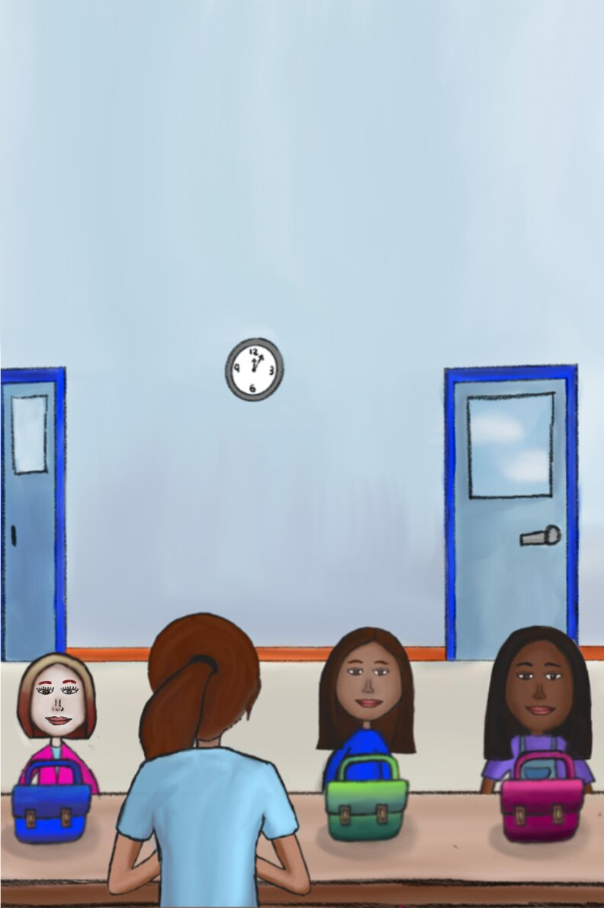
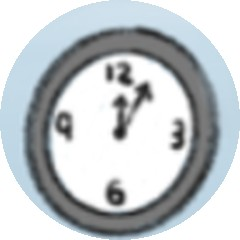
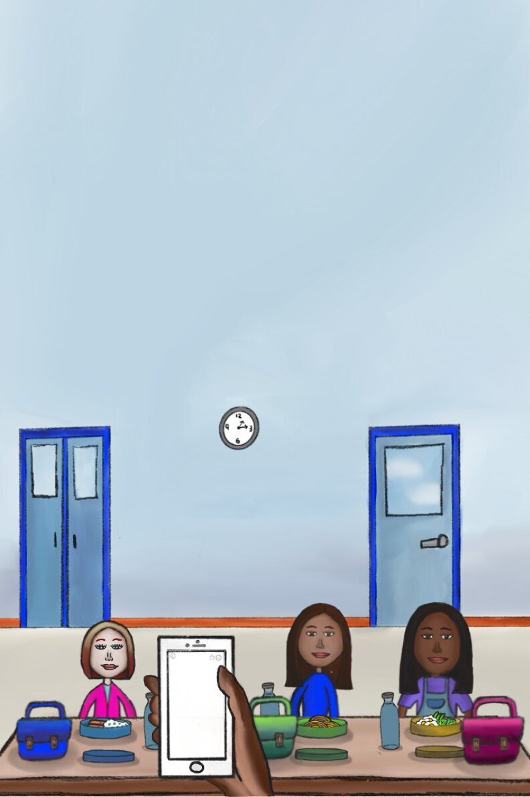
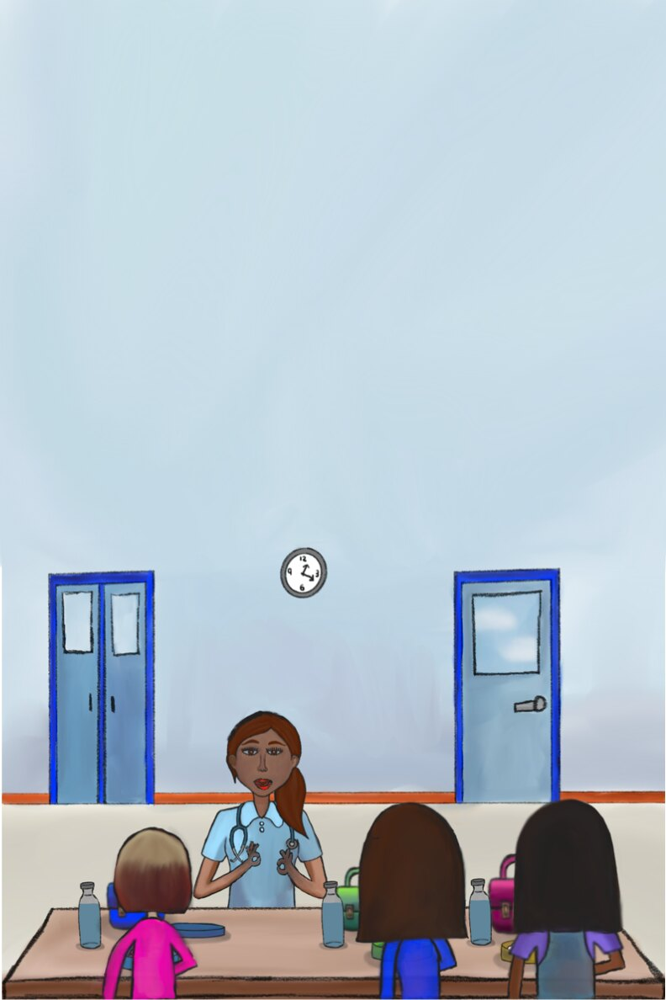
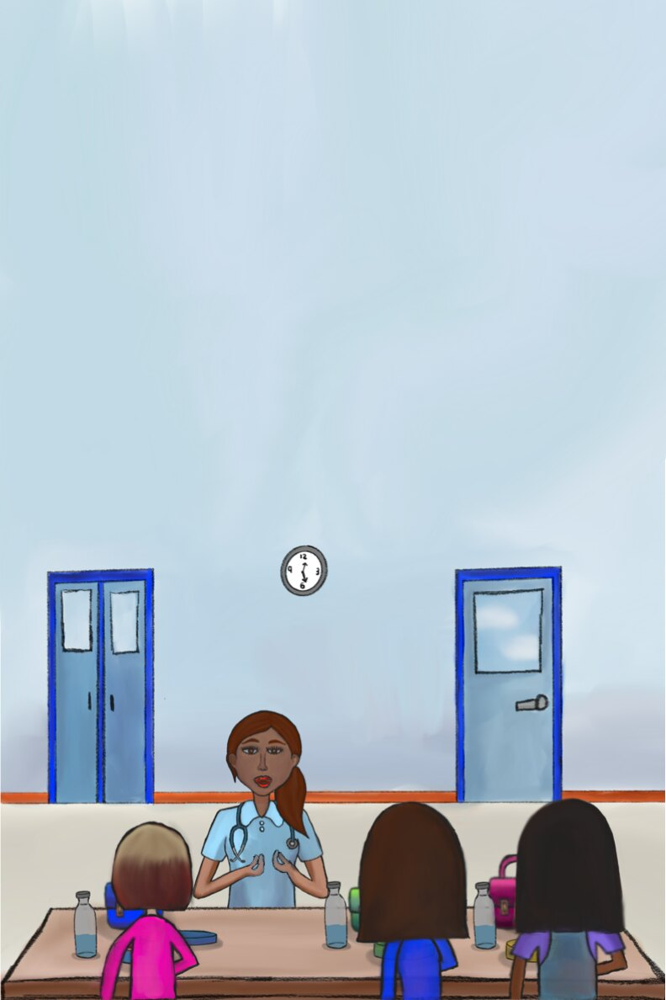
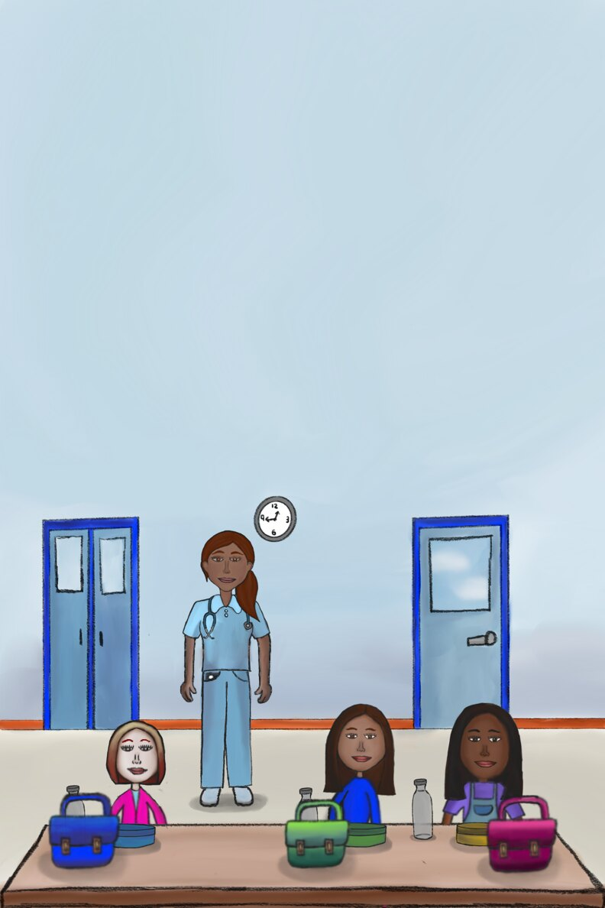
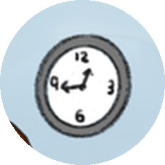
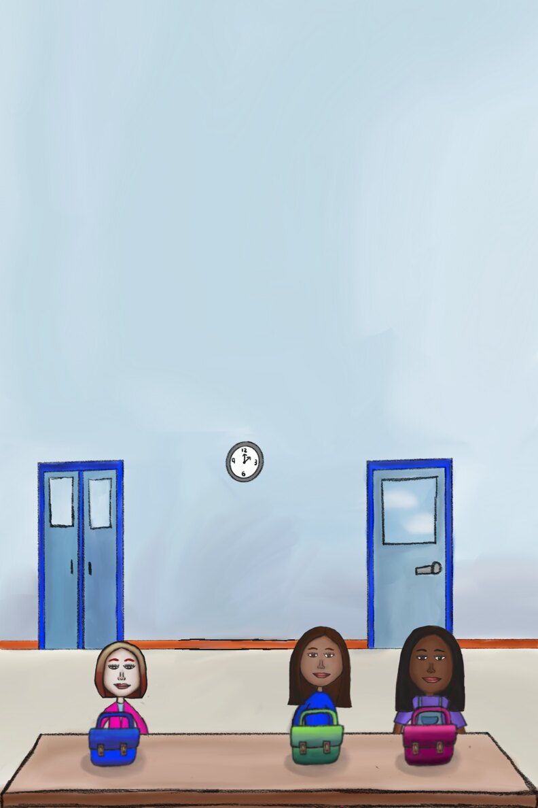
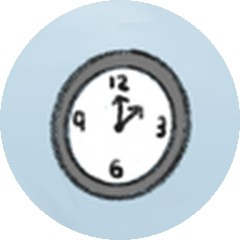
02 · Drawing the science, without words
Nurse Florence uses her phone to show the girls what is happening in the body. I drew each concept as its own illustration first, then placed it on the phone screen in the scene — with no words, so the picture does the explaining.
↓ On the phone
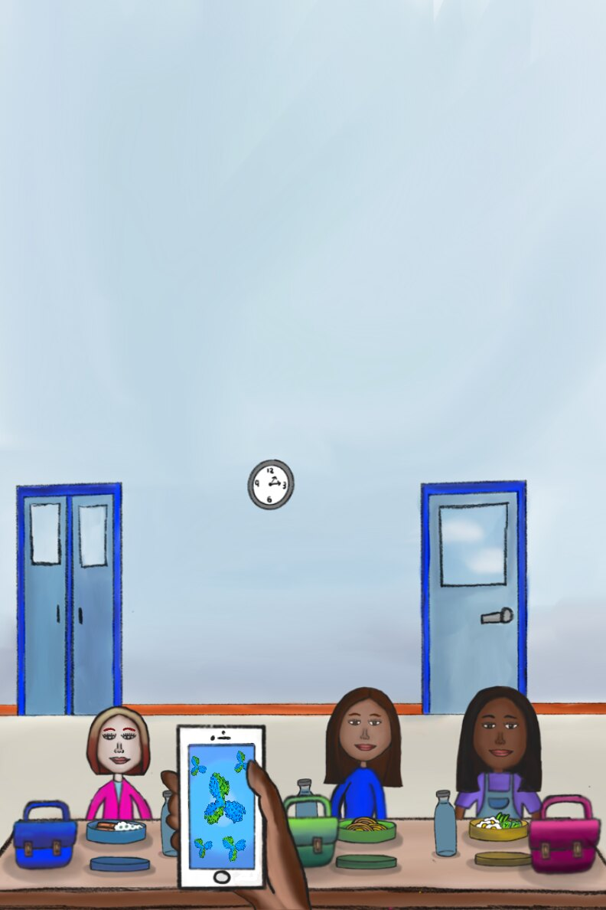
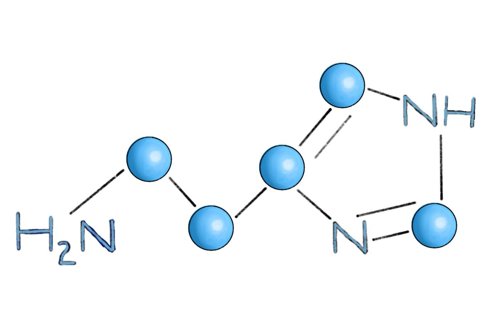
↓ On the phone
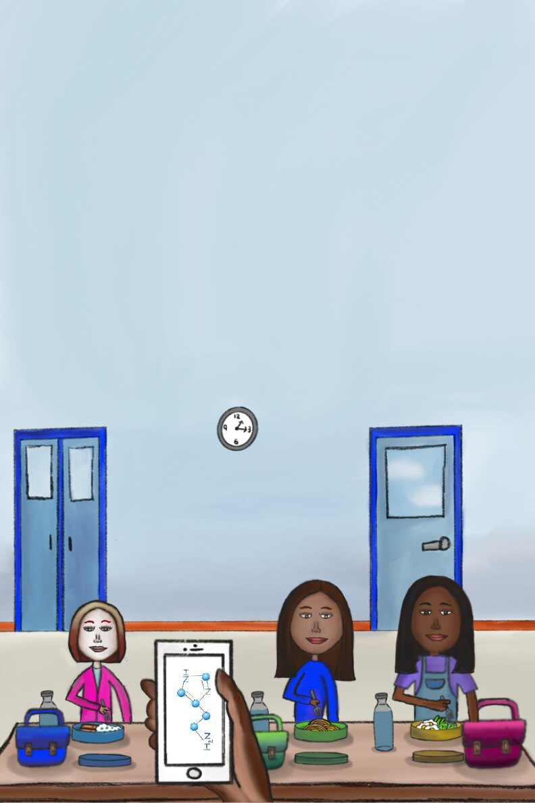
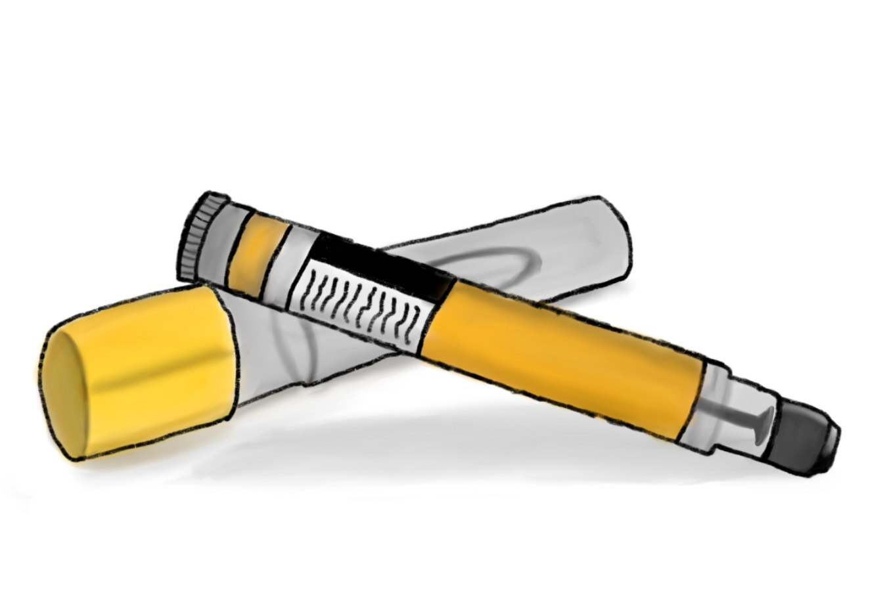
↓ On the phone
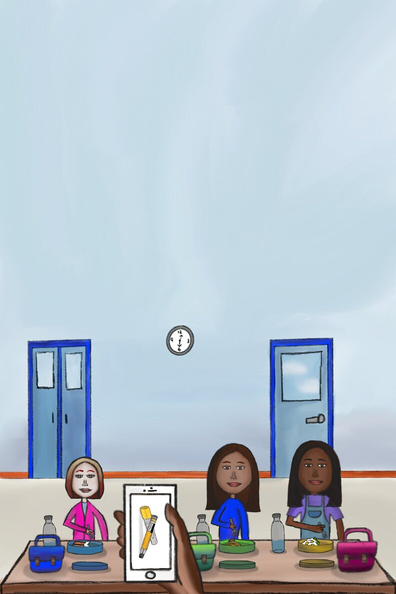
03 · One cast, every page
Jean, Condi and Sonia keep the same faces, hair, clothes and lunchboxes in every scene — the hallway, the cafeteria and the lunch table — so young readers always know who is who. The cast reflects the diversity of a real classroom.
Final illustrations
Outcome & what I learned
The book is published and sold on Lulu.com, alongside other Nurse Florence® books by Michael Dow, with “Drawings by Sriya Gopalan” on the cover.
What I learned: good design bridges the gap between an idea and something kids actually enjoy and learn from. Michael Dow encouraged me to grow as a design leader — using design to take on medical challenges and to help children embrace preventive care early in life.